Interne Vorschau · nicht für den Auftraggeber
Deine Rückmeldung zur ersten Fassung: gut vom Design, aber noch zu classic; mehr Wow, überall ein Bild, der Kopf zu schlicht. Die neue Fassung behält Schrift, Farben und die Ordnung der Nachrichten und legt Bild und Bühne dazu. Zu sehen ist jeweils zuerst der alte Stand, dann der neue.
Neue Startseite öffnen und selbst scrollen Neuen Artikel öffnen Alte Startseite zum Vergleich
Erster Blick
Neu: eine Zeile mit Datum und Hinweisen über dem Logo, das dunkle Band mit den Rubriken und das große Foto mit der Schlagzeile im Bild.
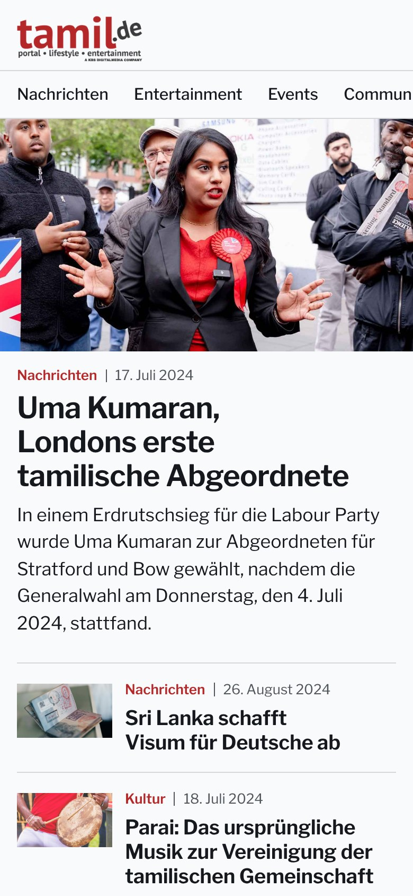
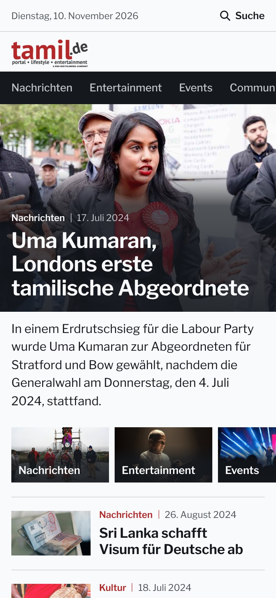
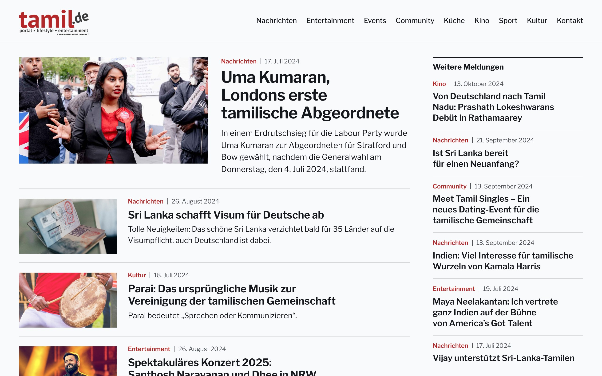
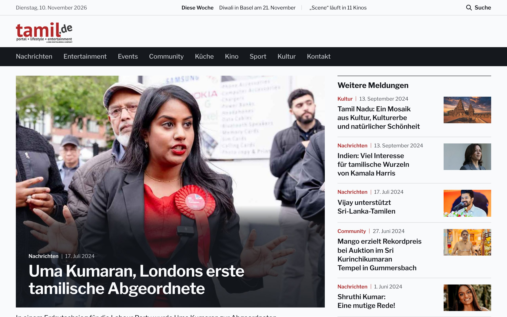
Weiter unten
Vorher standen die Meldungen als reine Textliste. Das dunkle Band bleibt beim Scrollen oben stehen.
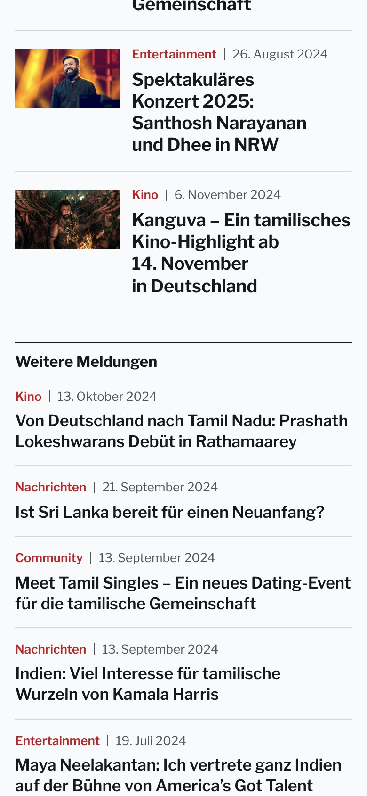
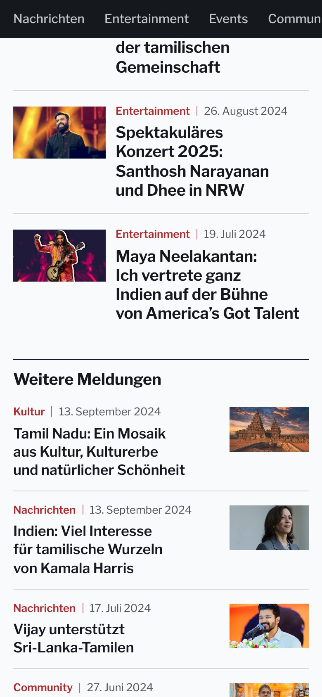
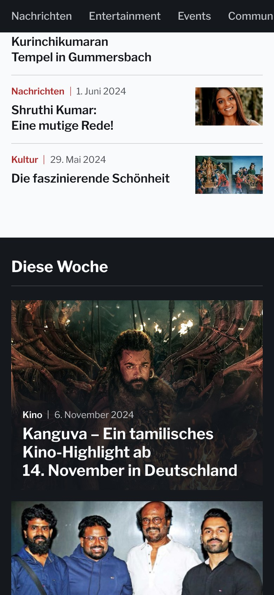
Diese Woche
Die Kino-Beiträge sind große Bildkacheln. Spielorte und Termine kommen aus dem News-Radar und haben kein Foto; sie stehen als gestaltete Kacheln daneben, ohne erfundenes Bild.
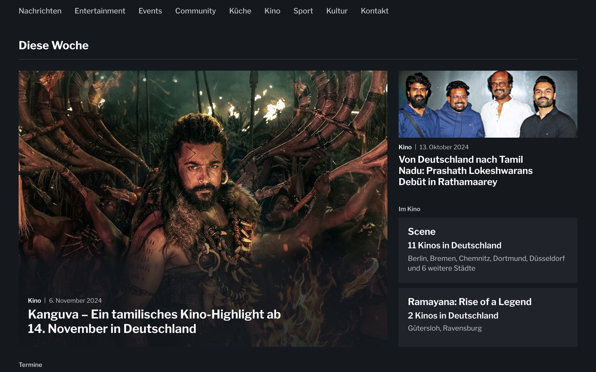
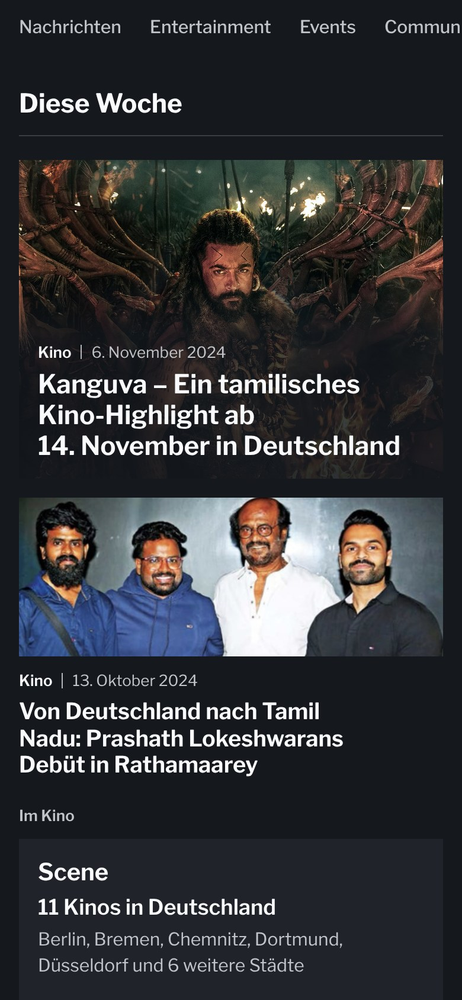
Küche
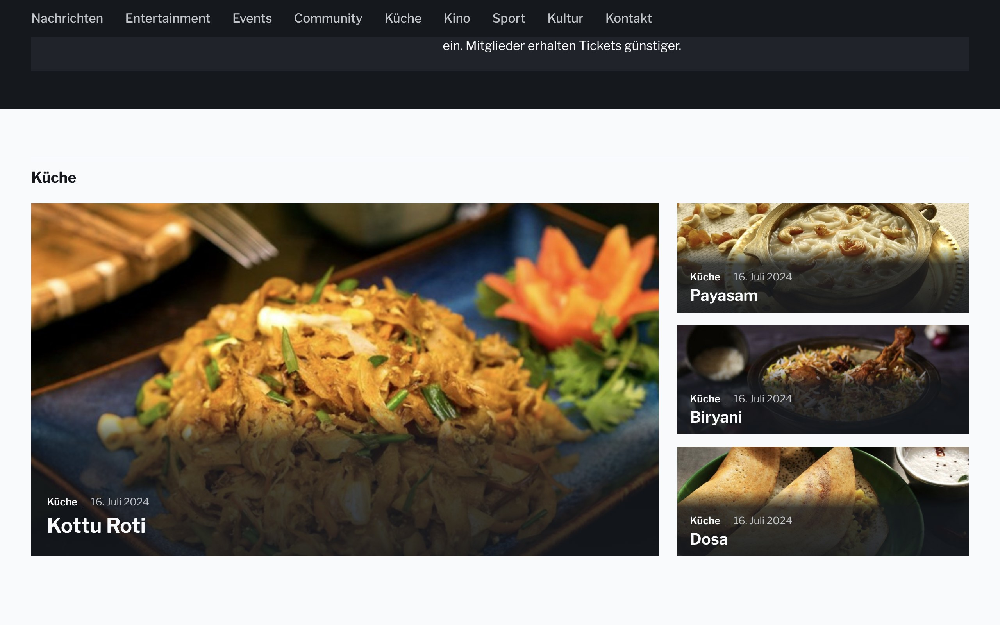
Artikel
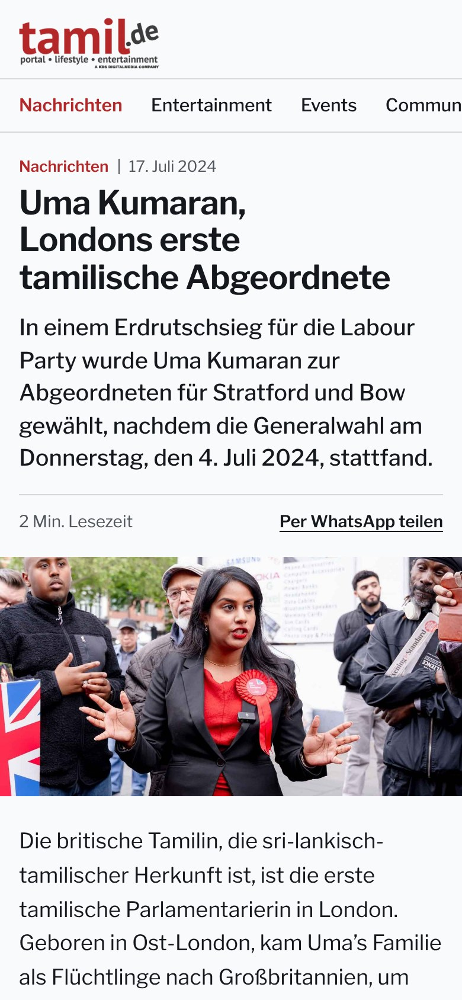
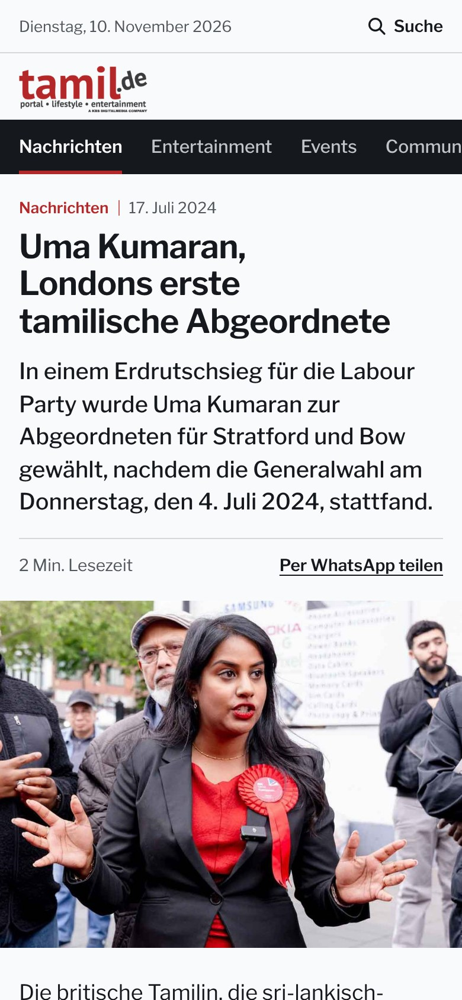
Was neu ist
Gemessen
Mehr Wow darf nicht wieder laut werden. Deshalb hat jede Verstärkung eine Grenze, die das Skript nachmisst: Rot bleibt ein kleiner Akzent, die Schrift bleibt gedeckelt, dunkel sind nur zwei Flächen.
| Messwert | Neu (Handy / Desktop) | Ergebnis | Grenze | Vorher (Handy / Desktop) |
|---|---|---|---|---|
| Schlagzeilen im ersten Bildschirm | 2 / 6 | eingehalten | Handy mind. 2, Desktop mind. 4 | 2 / 9 |
| Geschichten ohne Bild | 0 / 0 | eingehalten | keine | 9 / 9 |
| Größte Schrift (Schlagzeile des Aufmachers) | 30 / 40 | eingehalten | höchstens 34 / 44 px | 28 / 34 |
| Zweitgrößte Schrift der Seite | 22 / 26 | eingehalten | höchstens 24 / 28 px | 19 / 22 |
| Rot in der Fläche (ohne Bilder) | 0,1 / 0,1 | eingehalten | höchstens 3 % | 0,2 / 0,2 |
| Größte rote Schrift | 13 / 13 | eingehalten | höchstens 20 px | 13 / 13 |
| Dunkle Flächen auf der Seite | 2 / 2 | eingehalten | genau 2 (Rubrikband, „Diese Woche“) | 0 / 0 |
| Dunkel im ersten Bildschirm (ohne Bilder) | 6,4 / 5,8 | eingehalten | höchstens 12 % | 3,9 / 1,8 |
| Helle Schrift auf Bild oder Dunkel, kleinster Kontrast | 5,98 / 5,9 | eingehalten | mindestens 4,5 : 1 | – / – |
| Kopf bis Unterkante Rubrikband | 147 / 167 | eingehalten | am Handy höchstens 152 px | 112 / 90 |
| Zoom beim Überfahren | 1,03 / 1,03 | eingehalten | höchstens 1,04 | 1 / 1 |
| Längster Übergang | 0,35 / 0,35 | eingehalten | höchstens 0,4 s | 0 / 0 |
| Übergänge bei „Bewegung reduzieren“, Animationen | 0 / 0 | eingehalten | keine | 0 / 0 |
| Größte Rundung | 0 / 0 | eingehalten | höchstens 2 px | 0 / 0 |
| Schatten, Drehungen, verstellte Schriftbreite | 0 / 0 | eingehalten | keine | 0 / 0 |
| Bilder über ihrer Dateibreite | 0 / 0 | eingehalten | keine | 0 / 0 |
Stand vom 10. November 2026. Die Beiträge stammen aus dem Archiv der Seite, das im November 2024 endet; die Kino- und Termineinträge aus dem News-Radar. Das Logo liegt bisher nur als kleines Bild vor. Die klickbaren Seiten öffnen sich im selben Fenster; zurück geht es mit der Zurück-Taste.